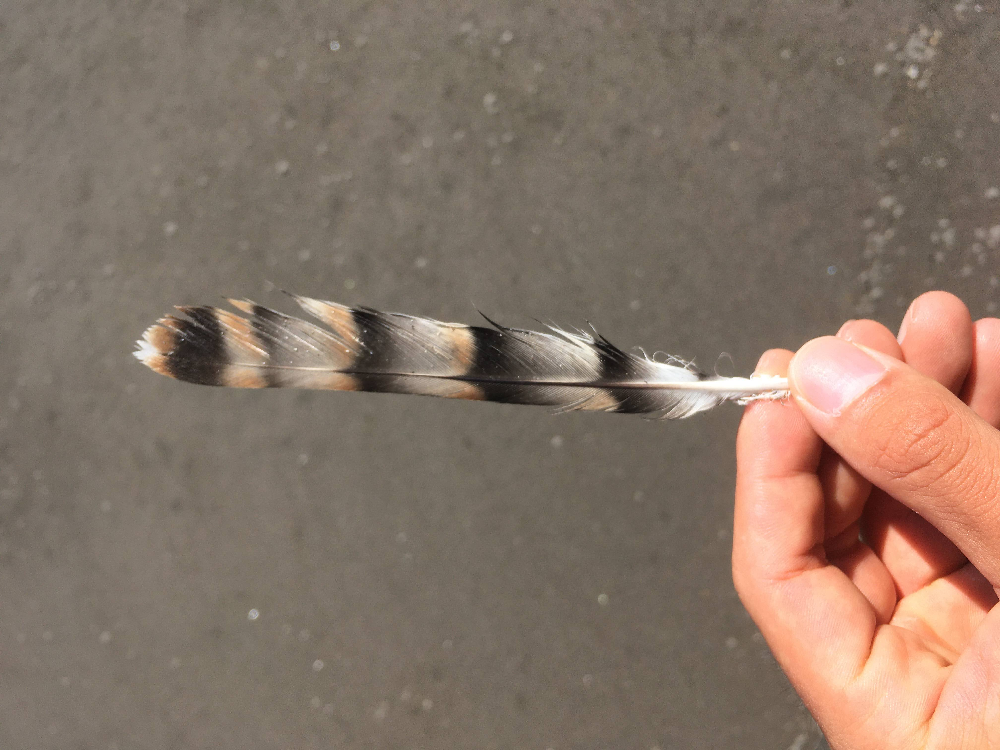

羽・翼について
はじめに申し上げておきますが、私は羽屋と名乗れるような人物ではありません。羽からの種同定に特にこだわりもなければ、落ちている羽の種類がわからなくても結構そのままにして無視してしまうタイプです。ですが、剥製にできない鳥の死体や食痕などから得られる羽はそのまま放置しておくのはもったいないと感じます。
羽標本や翼標本は貴重な資料であることには変わりないうえに、剥製では得られない情報(羽1枚単位の長さや翼を広げた時の模様など)も含まれていると考えており、そういった遺物を活用できる人間でありたいなと思っています。落ちている死体や羽を放置するのは気が引けるけど私に送れば何か活用してもらえるだろう、そう思っていただけるのが一番嬉しいことかもしれません。
そもそも羽を集め始めたきっかけは何だったのでしょう。おそらく小学校に上がる前に読んだ『落としたのは だれ？』という児童書であったと思います。この本に登場するヤマシギやコガモの羽はいつか拾ってみたい羽の1つでした。
羽を探すために外出することはありませんでしたが、鳥を見に行くたびに目線を下にやる機会が増えました。特に私はオオタカが繁殖していた雑木林を主な行動域としていたので食痕は比較的身近な存在であり、食痕を見つけるたびにせっせと拾っていた記憶があります。保存も本に書いてあった通りきちんと順番通りに台紙に貼り付け、ファイルに保管していました。
高校に入ると部活などで忙しく、いつしかそのファイルの更新は止まっていました。高校三年生のある日やまがらさん(仮名)という方にお会いする機会がありました。やまがらさんは生粋の羽屋で、本当に楽しそうに羽のファイルを見せつけてくれた(良い意味)のです。羽が小綺麗に整列したそのファイルには私が見たことのない鳥の羽やいつか拾ってみたいなと思っていた種までたくさんの羽が詰まっており、"羽"という趣味の魅力を強く感じました。家に帰った受験生の私は台紙や整列の仕方などやまがらさんの真似をして綺麗に羽を張り替えたものです。その後北海道に移住して今に至りますが、現在は自分で拾得したものの他に知り合いの方から頂いた死体などを翼・羽標本にすることが1つの趣味となっています。
基本的に私はFeather Baseというサイトに標本を登録することでみなさんに活用していただくという形式をとっています。このページではFeather baseと異なる点として、標本画像とともに拾得の経緯などを記せると良いなと思っています。というのも私は博物館の標本を見ていてこの個体はどういった経緯で亡くなり博物館に届けられたのだろうと疑問に思うことが多いからです。
個人的に拾得の経緯も展示に添えられていると良いなと思うのです。なおサイドバーには羽一式が揃っている種のみ掲載しており、手元にスキャン画像がないものに関してはFeather Baseの私が作成した当該種の標本ページがリンクしてあります。
